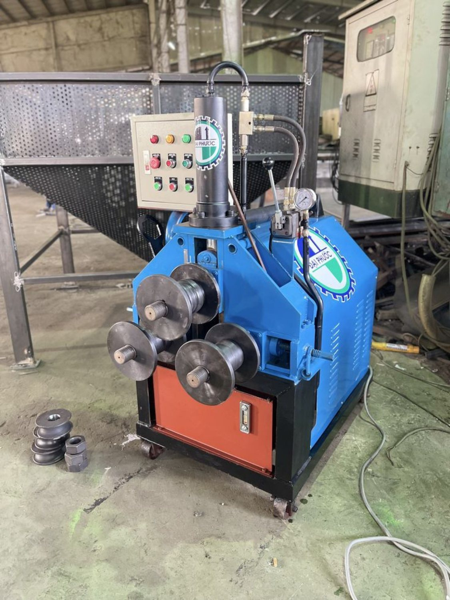
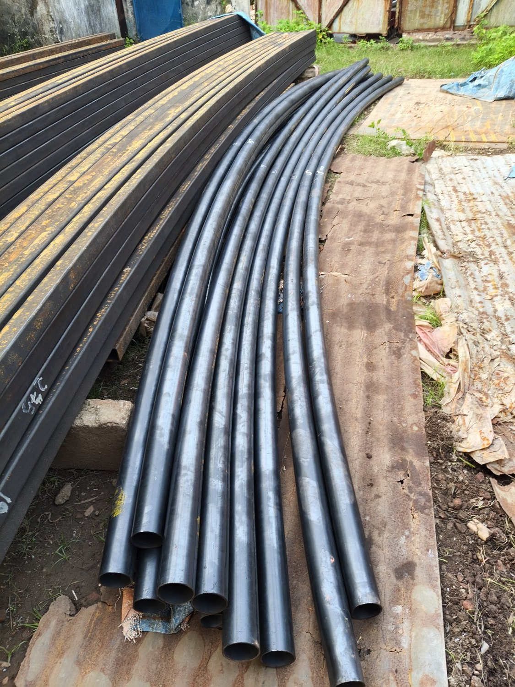
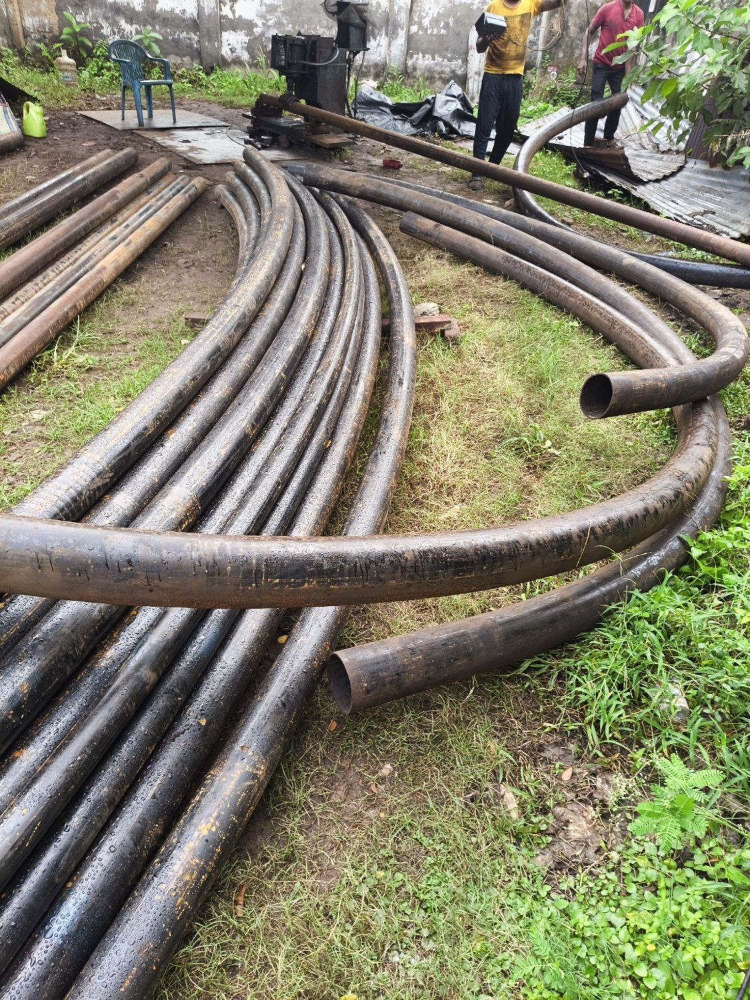
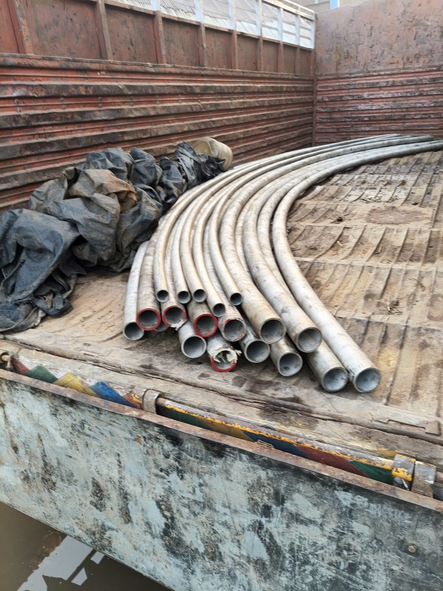
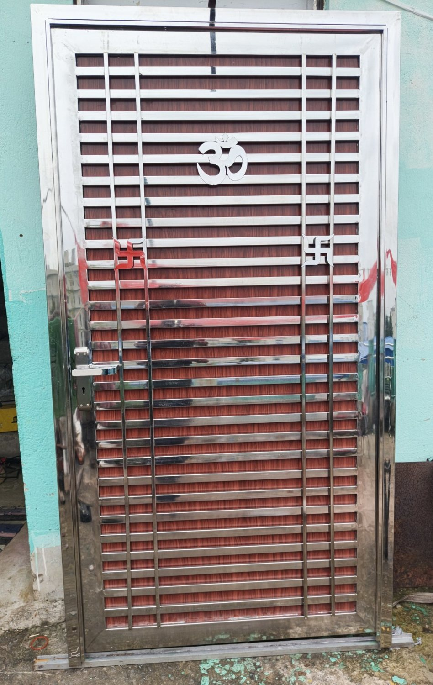

〰️
MS, SS & GI Pipe Bending
Precision industrial pipe and tube bending in MS, Steel, SS and GI as per required radius, diameter, wall thickness and drawing.
Gayatri Bending & Fabrication provides precision MS Pipe Bending, Steel & SS Pipe Bending, GI Pipe Bending, Angle Bending, Channel Bending, Sheet Bending, Section Bending and 3-Roller Bending services in Maheshtala, Kolkata. Industrial job work as per your drawing, dimensions and project requirements.
Gayatri Bending & Fabrication is a trusted workshop in Benirpole Industrial Area, Maheshtala, Kolkata specializing in pipe, tube, angle, channel, flat, sheet, section and 3-roller bending along with custom metal fabrication work across Kolkata, Howrah and West Bengal.
Send us your drawing, material details, pipe diameter/thickness, required bending radius and quantity. We discuss your job specifications directly and provide a clear quotation.
Proprietor: Rama Shankar Sharma
Contact Our TeamAccurate metal bending and fabrication services for industrial, structural, commercial and custom project applications in Kolkata.
Precision industrial pipe and tube bending in MS, Steel, SS and GI as per required radius, diameter, wall thickness and drawing.
Accurate angle iron and structural angle section bending (leg-in and leg-out) for rings, frames, supports and industrial structures.
Heavy-duty MS channel rolling and bending for structural frameworks, sheds, industrial machinery and custom fabrication projects.
Sheet metal bending and rolling for industrial enclosures, covers, ducts, brackets and custom project components.
Flat bar, square tube, rectangular pipe and metal section bending using 3-roller bending machines according to job specifications.
Complete metal fabrication, welding, assembly and custom job work for factories, contractors and industrial site requirements.
Send your drawing, dimensions or job photos on WhatsApp for a quick quotation discussion.
Send Enquiry on WhatsAppPhotos of our bending machinery and completed metal bending work in Kolkata.





Reliable metal bending and fabrication services for industrial and project requirements in Kolkata.
Accurate bending and fabrication work according to your drawing, dimensions, radius and industrial specifications.
MS Pipe, Steel Pipe, GI Pipe, Angle, Channel, Flat, Sheet, Section and 3-Roller Bending under one roof.
Speak directly with our workshop team by phone or WhatsApp to discuss your job requirements and quotation.
Your trust and satisfaction are important to Gayatri Bending & Fabrication.
We focus on quality bending work, timely delivery and reliable service for every industrial and commercial customer.
Consistent finish in MS Pipe, Steel Pipe, GI Pipe, Angle, Channel and Section Bending as per project drawings.
Have you worked with us? Contact us on phone or WhatsApp and share your experience with Gayatri Bending & Fabrication.
We provide industrial MS, SS and GI pipe bending, tube bending, angle bending, channel bending, flat bending, sheet bending, section bending, 3-roller bending and custom metal fabrication work in Kolkata and West Bengal.
Yes. Send your drawing, dimensions, pipe size/thickness, bending radius, material details and quantity on WhatsApp (+91 79800 01944) for a quick job discussion and quotation.
Our workshop is located at Benirpole Industrial Area, Maheshtala, Kolkata - 700141, West Bengal. We serve industrial and commercial clients across Kolkata, Howrah and nearby areas.
Call or WhatsApp for pipe bending, section bending and metal fabrication job work in Kolkata.
For a faster response, share these details on WhatsApp: